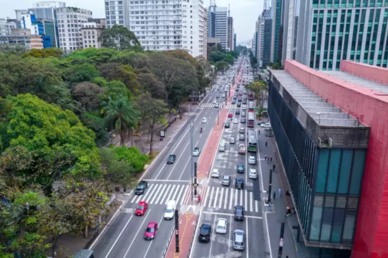

Lugares:
Parque do Ibirapuera

O principal jardim dos paulistanos engloba várias atrações e pode ser visitado várias vezes. As atividades no Parque Ibirapuera são constantemente renovadas, o que torna o local uma fonte inesgotável para turistas e moradores. Seja com uma nova exposição, um concerto inédito, uma apresentação única no teatro ou mesmo um novo entardecer, o Ibirapuera sempre é bem-vindo na agenda turística de quem visita a cidade.
MASP
Um dos museus mais importantes da América Latina. Projetado pelo arquiteto Lina Bo Bardi e inaugurado em 1968, o edifício é famoso por seu design inovador, com um grande vão livre que permite uma ampla área de circulação embaixo da estrutura. O MASP abriga uma impressionante coleção de obras, incluindo trabalhos de artistas como Van Gogh, Rembrandt e Picasso, além de ser um espaço vital para exposições e eventos culturais.
Ponte Estaiada

A Ponte Estaiada, oficialmente chamada de Ponte Octávio Frias de Oliveira, é um dos ícones de São Paulo. Inaugurada em 2008, ela se destaca por sua estrutura única, com um vão central que abriga cabos estaiados que sustentam a ponte. Localizada sobre o rio Pinheiros, conecta as zonas sul e oeste da cidade, facilitando o tráfego e oferecendo uma vista deslumbrante, especialmente à noite, quando é iluminada.